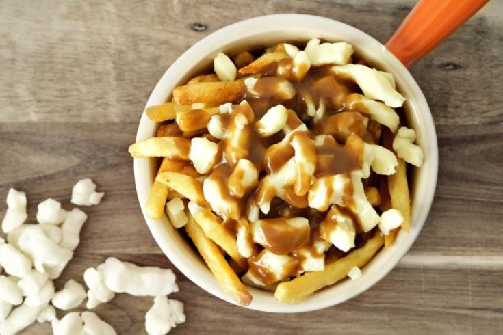

Poutine

Papas crujientes cubiertas con queso fresco y bañadas en salsa gravy caliente, un clásico canadiense que combina textura y sabor en cada bocado.
Ingredientes del Poutine
- 5 papas peladas y cortadas en bastones de un centímetro aprox de ancho.
- Aceite vegetal para freír.
- Queso en grano fresco (normalmente cheddar o mozzarella muy poco curado)
Ingredientes de la salsa de carne
- 1 cucharada de mantequilla.
- 1 cucharada de harina.
- 500 ml de caldo de carne, pollo o pavo.
- 1 cucharada de jugo de carne (opcional).
- Pimienta
Preparación
- Calentar el caldo y reservar. Fundir la mantequilla en una cazuela, añadir la harina al tiempo que removemos muy bien para que no se formen grumos. Incorporar el caldo caliente a la mezcla de mantequilla y harina mientras removemos constantemente, como si hiciésemos una bechamel. Mantener en suave hervor durante unos cinco minutos hasta que la salsa se reduzca y espese un poco. Es una salsa liquida, no debe espesar en exceso.
- Poner a calentar suficiente aceite para que cubra bien las patatas. Cuando esté bien caliente, freír estas hasta que estén bien doradas y crujientes.
- Justo antes de que las patas estén listas, calentar la salsa de carne. Colocar las patatas bien calientes en uno o varios cuencos, repartir el queso sobre ellas y bañar abundantemente con la salsa de carne.
💡 Consejo: para que las papas queden más crujientes, fríelas dos veces, primero a temperatura media y luego a temperatura alta justo antes de servir. Esto hará que el poutine tenga la textura perfecta al combinarse con el queso y la salsa.